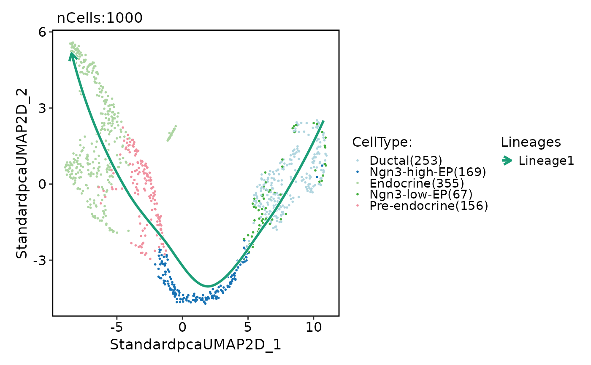

Calculates gene-set scores from the specified database (db) for each lineage using the specified scoring method (score_method).
It then treats these scores as expression values and uses them as input to the RunDynamicFeatures function to identify dynamically enriched terms along the lineage.
Usage
RunDynamicEnrichment(
object,
lineages,
score_method = "AUCell",
layer = "data",
assay = NULL,
min_expcells = 20,
r.sq = 0.2,
dev.expl = 0.2,
padjust = 0.05,
IDtype = "symbol",
species = "Homo_sapiens",
db = "GO_BP",
db_update = FALSE,
db_version = "latest",
convert_species = TRUE,
Ensembl_version = NULL,
mirror = NULL,
features = NULL,
TERM2GENE = NULL,
TERM2NAME = NULL,
minGSSize = 10,
maxGSSize = 500,
backend = c("cpp", "r"),
cores = 1,
verbose = TRUE,
seed = 11,
...,
srt = NULL
)Arguments
- object
A
Seuratobject orSummarizedExperimentobject containing the results of differential expression analysis (RunDEtest()). If specified, the genes and groups will be extracted from the object automatically. If not specified, thegeneIDandgeneID_groupsarguments must be provided.- lineages
Lineage names for which dynamic features should be calculated.
- score_method
The method to use for scoring. Can be
"Seurat","AUCell","UCell","GSVA","ssGSEA","zscore","PLAGE", or"VISION". Multiple methods can be supplied at once; each method will be written to a method-suffixed assay before dynamic-feature fitting.- layer
Assay layer to use.
- assay
Assay to use.
NULLuses the default assay.- min_expcells
The minimum number of expected cells.
- r.sq
The R-squared threshold.
- dev.expl
The deviance explained threshold.
- padjust
The p-value adjustment threshold.
- IDtype
Type of gene IDs in the
objectobject orgeneIDargument. This argument is used to convert the gene IDs to a different type ifIDtypeis different fromresult_IDtype.- species
"Homo_sapiens"or"Mus_musculus".- db
Character vector of database or resource selectors:
"GO","GO_BP","GO_CC","GO_MF","KEGG","WikiPathway","Reactome","CORUM","MP","DO","HPO","PFAM","Chromosome","GeneType","Enzyme","TF","CSPA","Surfaceome","SPRomeDB","VerSeDa","TFLink","hTFtarget","TRRUST","JASPAR","ENCODE","MSigDB","CellTalk","CellChat","CytoTRACE2"or"MSigDB_<collection>". A vector may combine sources. See the corresponding preparation function for source-specific settings.- db_update
Force a refresh.
FALSEloads the cache when available.- db_version
Database version to retrieve.
- convert_species
Use a species-converted database when the annotation is missing for
species.- Ensembl_version
Ensembl version.
NULLuses the latest.- mirror
Specify an Ensembl mirror to connect to. The valid options here are
"www","uswest","useast","asia".- features
A named list of feature lists for custom enrichment gene sets. If provided, it takes precedence over
TERM2GENEanddb.- TERM2GENE
A data frame specifying the gene-term mapping for a custom database. The first column should contain the term IDs, and the second column should contain the gene IDs.
- TERM2NAME
A data frame specifying the term-name mapping for a custom database. The first column should contain the term IDs, and the second column should contain the corresponding term names.
- minGSSize
The minimum size of a gene set to be considered in the enrichment analysis.
- maxGSSize
The maximum size of a gene set to be considered in the enrichment analysis.
- backend
Enrichment backend.
"cpp"is the default and uses a fast native hypergeometric ORA implementation and returns the enrichment table withoutenrichResultobjects."r"usesclusterProfiler::enricher()and returnsenrichResultobjects inresults.GO_simplify = TRUEcurrently uses the R backend.- cores
The number of worker processes to use for parallelization. Default is
1.- verbose
Whether to print the message. Default is
TRUE.- seed
Optional integer seed. When supplied, every input receives a deterministic independent L'Ecuyer-CMRG random-number stream, making results reproducible across worker counts and scheduling order. The caller's random number state is restored when the call finishes.
- ...
Passed to helper functions.
- srt
Deprecated alias for
object; supply exactly one of the two. It will be removed in scop 1.0.0.
Examples
Restored example output generated on 2026-10-13 from SCOP 53ed7e08f. These historical examples have not been revalidated against the current release. Current usage and arguments are documented above.
data(pancreas_sub)
pancreas_sub <- RunStandardWorkflow(pancreas_sub)
#> ℹ [2026-10-13 16:53:40] Start standard processing workflow...
#> ℹ [2026-10-13 16:53:40] Checking a list of <Seurat>...
#> ! [2026-10-13 16:53:40] Data 1/1 of the `srt_list` is "unknown"
#> ℹ [2026-10-13 16:53:40] Perform `NormalizeData()` with `normalization.method = 'LogNormalize'` on 1/1 of `srt_list`...
#> ℹ [2026-10-13 16:53:40] Perform `FindVariableFeatures()` on 1/1 of `srt_list`...
#> ℹ [2026-10-13 16:53:40] Use the separate HVF from `srt_list`
#> ℹ [2026-10-13 16:53:40] Number of available HVF: 2000
#> ℹ [2026-10-13 16:53:40] Finished check
#> ℹ [2026-10-13 16:53:40] Perform `ScaleData()`
#> ℹ [2026-10-13 16:53:40] Perform pca linear dimension reduction
#> ℹ [2026-10-13 16:53:41] Use stored estimated dimensions 1:23 for Standardpca
#> ℹ [2026-10-13 16:53:41] Perform `Seurat::FindClusters()` with `cluster_algorithm = 'louvain'` and `cluster_resolution = 0.6`
#> ℹ [2026-10-13 16:53:41] Reorder clusters...
#> ℹ [2026-10-13 16:53:41] Skip `log1p()` because `layer = data` is not "counts"
#> ℹ [2026-10-13 16:53:41] Perform umap nonlinear dimension reduction
#> ✔ [2026-10-13 16:53:51] Standard processing workflow completed
pancreas_sub <- RunSlingshot(
pancreas_sub,
group.by = "CellType",
reduction = "UMAP"
)

pancreas_sub <- RunDynamicFeatures(
pancreas_sub,
lineages = "Lineage1",
fit_method = "pretsa",
n_candidates = 200
)
#> ℹ [2026-10-13 16:53:51] Start find dynamic features
#> ℹ [2026-10-13 16:53:52] Data type is raw counts
#> ℹ [2026-10-13 16:53:52] Number of candidate features (union): 200
#> ℹ [2026-10-13 16:53:52] Data type is raw counts
#> ℹ [2026-10-13 16:53:52] Calculating dynamic features for "Lineage1"...
#> ✔ [2026-10-13 16:53:52] Find dynamic features done
ht1 <- DynamicHeatmap(
pancreas_sub,
lineages = "Lineage1",
cell_annotation = "CellType",
n_split = 3
)
#> ℹ [2026-10-13 16:53:52] [1] 132 features from Lineage1 passed the threshold (exp_ncells>[1] 20 & r.sq>[1] 0.2 & dev.expl>[1] 0.2 & padjust<[1] 0.05):
#> ℹ Ins1,Ins2,Nnat,Iapp,Lrpprc,Npy,Chgb,Slc38a5,2810417H13Rik,Rbp4...
#> ℹ [2026-10-13 16:53:53]
#> ℹ The size of the heatmap is fixed because certain elements are not scalable.
#> ℹ The width and height of the heatmap are determined by the size of the current viewport.
#> ℹ If you want to have more control over the size, you can manually set the parameters 'width' and 'height'.
pancreas_sub <- RunDynamicEnrichment(
pancreas_sub,
lineages = "Lineage1",
score_method = "AUCell",
db = "GO_BP",
species = "Mus_musculus"
)
#> ℹ [2026-10-13 16:53:54] Species: "Mus_musculus"
#> ℹ [2026-10-13 16:53:54] Loading cached: GO_BP version: 3.23.0 nterm:14957 created: 2026-10-13 16:23:11
#> ℹ [2026-10-13 16:53:56] Start cell scoring
#> ℹ [2026-10-13 16:53:57] Data type is log-normalized
#> ℹ [2026-10-13 16:53:58] Number of feature lists to be scored: 2713
#> ✔ [2026-10-13 16:54:11] Cell scoring completed
#> ℹ [2026-10-13 16:54:11] Start find dynamic features
#> ℹ [2026-10-13 16:54:11] Data type is log-normalized
#> ℹ [2026-10-13 16:54:11] Number of candidate features (union): 2713
#> ℹ [2026-10-13 16:54:11] Data type is log-normalized
#> ℹ [2026-10-13 16:54:11] Calculating dynamic features for "Lineage1"...
#> ℹ [2026-10-13 16:54:11] Using 1 core
#> ⠙ [2026-10-13 16:54:11] Running for 1 [1/2713] 0% | ETA: 1m
#> ⠹ [2026-10-13 16:54:11] Running for 105 [105/2713] 4% | ETA: 26s
#> ⠸ [2026-10-13 16:54:11] Running for 438 [438/2713] ■ 16% | ETA: 21s
#> ⠼ [2026-10-13 16:54:11] Running for 760 [760/2713] ■■ 28% | ETA: 18s
#> ⠴ [2026-10-13 16:54:11] Running for 1088 [1088/2713] ■■■■ 40% | ETA: 15s
#> ⠦ [2026-10-13 16:54:11] Running for 1400 [1400/2713] ■■■■■ 52% | ETA: 12s
#> ⠧ [2026-10-13 16:54:11] Running for 1723 [1723/2713] ■■■■■■ 64% | ETA: 9s
#> ⠇ [2026-10-13 16:54:11] Running for 2049 [2049/2713] ■■■■■■■ 76% | ETA: 6s
#> ⠏ [2026-10-13 16:54:11] Running for 2354 [2354/2713] ■■■■■■■■ 87% | ETA: 3s
#> ⠋ [2026-10-13 16:54:11] Running for 2668 [2668/2713] ■■■■■■■■■ 98% | ETA: 0s
#> ✔ [2026-10-13 16:54:11] Completed 2713 tasks in 25.5s
#>
#> ℹ [2026-10-13 16:54:11] Building results
#> ✔ [2026-10-13 16:54:37] Find dynamic features done
#> ✔ [2026-10-13 16:54:37] Dynamic enrichment analysis completed
ht2 <- DynamicHeatmap(
pancreas_sub,
assay = "GO_BP",
lineages = "Lineage1_GO_BP",
cell_annotation = "CellType",
n_split = 3,
split_method = "kmeans-peaktime"
)
#> ℹ [2026-10-13 16:54:37] [1] 1881 features from Lineage1_GO_BP passed the threshold (exp_ncells>[1] 20 & r.sq>[1] 0.2 & dev.expl>[1] 0.2 & padjust<[1] 0.05):
#> ℹ GO-BP-2..deoxyribonucleotide.biosynthetic.process,GO-BP-2..deoxyribonucleotide.metabolic.process,GO-BP-ADP.catabolic.process,GO-BP-ADP.metabolic.process,GO-BP-ATP.metabolic.process,GO-BP-ATP.synthesis.coupled.electron.transport,GO-BP-B.cell.activation,GO-BP-B.cell.proliferation,GO-BP-CENP.A.containing.chromatin.assembly,GO-BP-D.glucose.import.across.plasma.membrane...
#> ! [2026-10-13 16:54:37] The values in the 'counts' layer are non-integer. Set the library size to 1.
#> ℹ [2026-10-13 16:54:38]
#> ℹ The size of the heatmap is fixed because certain elements are not scalable.
#> ℹ The width and height of the heatmap are determined by the size of the current viewport.
#> ℹ If you want to have more control over the size, you can manually set the parameters 'width' and 'height'.